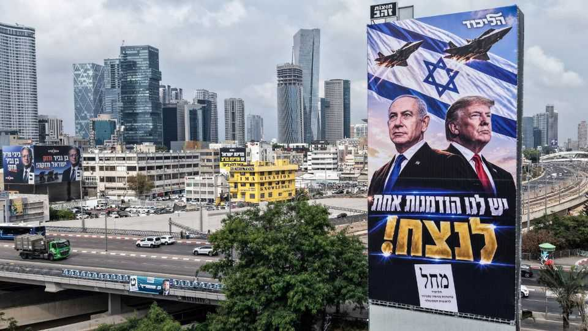

Republicans blame Israel for their defeat
The Democrats’ victory could accelerate the decline of the Israeli-American alliance

Nov 12th 2026
The blame started before voting in America’s midterm elections ended and the extent of the Republicans’ drubbing was revealed. In an interview on election day Donald Trump said that America would cut off military aid to Israel “at the end of the year”. Israel no longer needs it, he explained; the country is “thriving”. But there was another reason, the president added: “It’s a bad talking point.” J.D. Vance, the vice-president, was more direct. On the day after the election, he blamed the war in Iran, and also America’s relationship with Israel, for the Republicans’ defeat.
Israel has been falling steadily out of favour in America. Its brutal campaigns in Gaza and Lebanon had already angered voters and politicians on both ends of the political spectrum. The unpopular war with Iran has drawn further attention to the $3.8bn Israel receives annually from America, nearly all of it as subsidies for the purchase of American-made arms and other military supplies.
America’s alliance with Israel featured in a number of high-profile contests, including that of Abdul El-Sayed, the senator-elect from Michigan who fiercely criticised military aid. Other candidates took pride in not accepting donations from AIPAC, the pro-Israel lobby. AIPAC itself said two weeks before the election that it would stop endorsing candidates, a tacit admission of the toxicity of its brand.
Messrs Trump and Vance’s words were not lost on Israelis. “The fact Trump said this on the day of the midterms was a political message that Israel is currently unpopular with both parties,” says Avner Golov, a former senior director on Israel’s national-security council.
Barack Obama signed the current ten-year $3.8bn package, which is set to run out in 2028. The Israeli government was aware that negotiating a new package would be tricky. Growing numbers of Democrats are particularly hostile to Israel, and the Trump administration—and Republicans more widely—are loth to give money to foreigners. In light of this, Binyamin Netanyahu, Israel’s prime minister, told The Economist in January that he favoured gradually phasing out American aid over the next ten years. Talks had started in recent months about the future of aid, but Mr Trump’s election-day announcement took Israeli officials by surprise.
“It’s been clear for years that the terms of the alliance with America were going to have to change,” says Alon Pinkas, a former diplomat who served as Israel’s consul-general in New York. “Now it looks like Netanyahu has agreed with Trump to end the current aid agreement, without anything ready to replace it.”
The future of the relationship is unclear. Mr Trump has suggested that Israel will be able to continue buying American arms, on its own dime. But Israeli officials worry that a Democratic-controlled Congress will limit the kinds of weapons Israel can buy and restrict how it can use them, especially in the occupied Palestinian territories. For over half a century successive American administrations have been committed to maintaining Israel’s “qualitative military edge” in the Middle East, supplying it with advanced weapons systems, years before America’s Arab allies. That may be up for debate as well.
An end to American aid would blow a $7bn hole in Israel’s finances in the next two years. After three years fighting multiple wars, it has been on a spending spree to refresh the IDF’s arsenal, ordering planes, helicopters and more. Israel will owe another $10bn after 2028 for kit it has already ordered, according to the Wall Street Journal.
Israel’s economy could withstand that, though it would mean cuts to the national budget in the coming years. “In financial terms it’s regrettable, but not an earthquake,” says Yigal Newman, a professor of finance at the Hebrew University in Jerusalem. “American aid is barely half a percent of Israel’s GDP.”
But, he points out, it would also be a blow to Israel’s standing as America’s key ally. Israel’s relationship with America not only boosts its military and economic power, it gives Israel diplomatic cover as well. America frequently deploys its veto in the United Nations Security Council to block anti-Israel resolutions. It puts pressure on other countries, such as Britain, which has announced sanctions on Israel over the violent settler attacks on Palestinians in the occupied West Bank. If the new Congress is considering similar sanctions, Israel will be more exposed internationally.
All is not lost for the alliance, which goes far beyond arms sales. America maintains radar and intelligence-gathering installations in Israel and recently expanded an airbase used by American aircraft in the Negev. The two countries co-operate intensively on missile defence and intelligence sharing. Israel has access to America’s surveillance satellites. America’s arms companies make use of the Israel Defence Forces to test their weapons on the battlefield.
And Israel still has supporters in Congress. Chuck Schumer, the probable majority leader in the senate, and Hakeem Jeffries, his counterpart in the House of Representatives, are on the more Israel-friendly wing of the Democrats. “The size of the Democratic victory suggests that the influence of the far-left on bills will be limited,” says Dov Waxman, a political scientist at University of California, Los Angeles.
But the relationship has fundamentally changed. Mr Netanyahu, who lost his majority in the Knesset on October 27th, has long presented himself to Israelis as the ultimate expert on America. Yet he has overseen the most drastic deterioration in his country’s standing in America in Israel’s history. Israeli diplomats privately accept that their prime minister, his hardline policies and hard-right coalition are “toxic in America”. A change in government in Jerusalem would help. But the alliance is becoming more brittle. ■